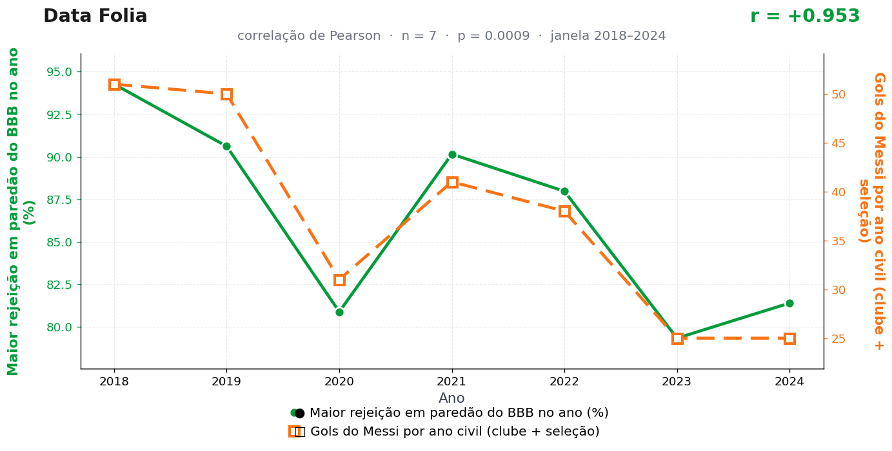

Post de 15/06/2026

A teoria
O BBB produz uma forma concentrada de vontade coletiva. O voto transforma opinião espalhada em uma decisão única, pública e carregada de pressão.
Messi recebe essa pressão como combustível técnico. A energia que elimina no estúdio reaparece no campo em forma de tempo de bola, clareza de chute e escolha do canto.
A ponte é a decisão. O público decide quem sai; Messi decide onde a bola entra. Dois rituais diferentes, uma mesma força de conclusão.
Fica o registro histórico: em nenhuma ata oficial do Barcelona, do PSG ou do Inter Miami consta a palavra "paredão". Ainda assim, a curva insiste, com a teimosia de quem já viu muita eliminação de domingo.
Nosso estagiário sugeriu testar a hipótese inversa — Messi eliminando participantes. A proposta foi arquivada por excesso de plausibilidade dramática.
A teoria é ficção; a correlação é real: r = 0,95 (n = 7, p = 0,001).
Os dados por trás

- Maior rejeição em paredão do BBB no ano (%) — 7 pontos anuais, período 2018–2024. Fonte: gshow / Globo — divulgações oficiais.
- Gols do Messi por ano civil (clube + seleção) — 7 pontos anuais, período 2018–2024. Fonte: RSSSF / IFFHS / Wikipedia.
Como as correlações deste site são encontradas — e por que você não deve confiar nelas — está explicado na nossa metodologia.
Por que isso acontece?
As duas séries estão em queda suave no mesmo período. As rejeições recordes do BBB encolheram entre 2018 e 2024 (de 94% para a casa dos 80%), e os gols anuais de Messi também caíram (de 51 para 25), como se espera de um atleta atravessando a segunda metade da carreira. Duas curvas descendo devagar produzem correlação alta entre si — é aritmética, não afinidade.
É o caso clássico de tendência temporal comum: quando cada série tem sua própria razão para cair (fragmentação de audiência de um lado, calendário e idade do outro), o coeficiente de Pearson captura o paralelismo das tendências e o transforma num r = 0,95 que parece profundo, mas é vazio.
Com n = 7, cada ponto pesa demais: mover um único ano mudaria o resultado de forma visível. Amostras anuais curtas são o ambiente perfeito para coincidências fotogênicas — e é por isso que elas dominam o nosso arquivo.
Post de 15/06/2026 · publicado também no Instagram @datafolia.